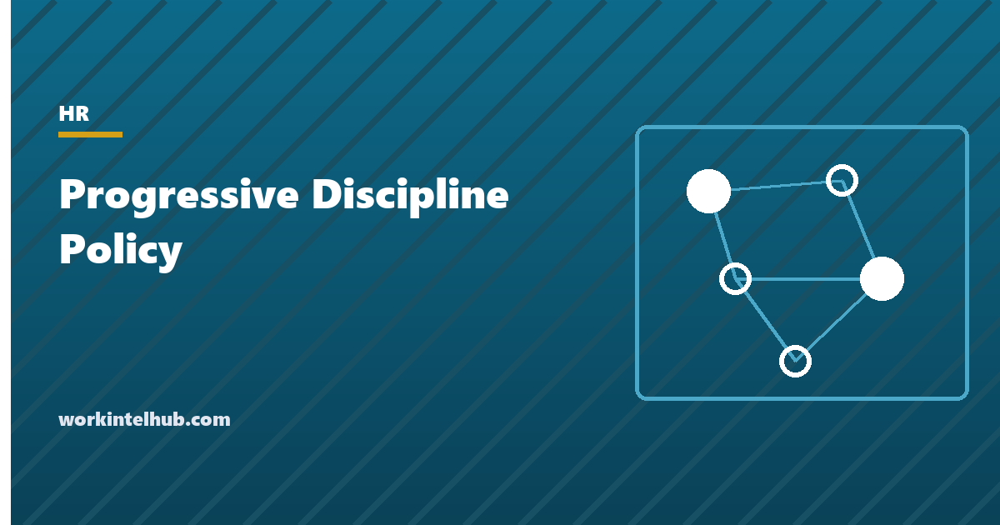

Progressive Discipline Policy

Progressive discipline is a sequence of increasingly formal responses to a conduct or performance problem: a documented conversation, a written warning, a final warning, then termination. It exists so that an employee is told what is wrong and given a chance to fix it before losing their job, and so that if they do lose it, the record shows they were told. Used well, it fixes more problems than it ends. Used badly, it becomes a checklist that managers complete on the way to a decision already made.
The generator below writes a policy with the steps, the active period and the two clauses that keep it from becoming a contract. The rest of the page covers the steps in detail, the situations where the ladder does not apply, and the rules that change for unionised, exempt and protected employees.
Progressive discipline policy generator
Nothing typed here leaves your browser. The policy reserves the right to skip steps and restates at-will employment, which together stop a progressive discipline policy from becoming a promise of process. For a unionised workforce the collective agreement controls where it conflicts with this text.
The steps and what each has to contain
| Step | Purpose | Record | Common failure |
|---|---|---|---|
| Documented verbal warning | Names the problem and the standard, early | Manager's dated note of the meeting in the file | Not written down, so the written warning later looks like the first mention |
| Written warning | Formal notice with facts, standard, change required, support, review date, consequence | Signed for receipt; employee response attached | Characterisations instead of dated facts; no review date |
| Final written warning | States that the next occurrence may end employment | As above, with HR sign-off | Issued for a different problem than the earlier warnings, so the sequence does not connect |
| Termination | Ends employment after the steps, or immediately for gross misconduct | Termination letter, final pay on the state deadline, state notices | Reason in the letter differs from the file |
Every written step has the same eight parts, which our write-up generator produces: what happened, with dates; the policy or standard; previous discussions; what must change and how it will be measured; support offered; a review date; the consequence; and space for the employee's response. The support line is the one to keep. It is where an employee says "I have been late because of a medical condition", and it is far better for that to happen in response to a question on the form than in a complaint afterwards.
The active period is how the ladder resets. A warning that stays active for twelve months means a similar problem inside that window moves to the next step, and a problem after it starts again. Without an active period, a written warning from 2019 is still step two in 2026, which no arbitrator or jury will accept. Twelve months is the common choice; six is defensible for attendance, where the pattern shows quickly.
Why the policy must say steps can be skipped
A progressive discipline policy that describes four steps and does not reserve the right to skip them has, in several states, been read as a promise that all four will happen before termination. The employee dismissed at step two then has a breach of contract claim regardless of the merits. Two sentences prevent it: that the company may begin at any step, repeat a step or proceed directly to termination depending on the seriousness of the conduct; and that employment remains at will and the policy creates no contract. The generator's section 2 contains both. The same sentences belong in the handbook and should not be contradicted by a probationary period policy that reserves the steps for post-probation employees.
Reserving the right to skip is not the same as skipping often. A policy that is skipped routinely for some employees and followed for others is evidence of inconsistency, and inconsistency is how a discrimination claim is proved. Skip for gross misconduct, skip where the conduct is serious enough that a warning would be absurd, and otherwise follow the ladder. Write down why whenever a step is skipped.
What sits outside the ladder
- Gross misconduct. Violence, theft, harassment, fraud, falsified time records, serious safety breaches, working intoxicated, data breaches. First occurrence, investigation, termination. The policy lists examples and says the list is not exhaustive.
- Capability rather than conduct. An employee who is trying and cannot do the job needs a performance improvement plan with objectives and dates, not a warning for misconduct. Many policies run the two in parallel: the plan sets the standard, the ladder applies if the plan is ignored.
- Protected absence. Leave under the FMLA, state leave laws, sick leave laws, jury service, military service and disability accommodation cannot be counted in an attendance policy or treated as a disciplinary matter. The policy says so explicitly, because attendance is where the ladder is most used and most often misused.
- Protected activity. A warning issued shortly after an employee complained of harassment, reported a safety issue, asked about overtime pay or discussed wages with colleagues will be read as retaliation unless the file shows the problem predated the complaint. Check timing before issuing anything.
- Suspension of exempt employees. An unpaid disciplinary suspension of an exempt employee for less than a full week is permitted only for violations of written workplace conduct rules such as harassment or safety policies, and never for performance or attendance. Docking for anything else risks the exemption for the whole class. The generator limits suspension to non-exempt staff for that reason.
Union workplaces and Weingarten rights
Where employees are represented, the collective bargaining agreement usually sets the discipline procedure, the just-cause standard and the grievance and arbitration route, and the company policy yields to it where the two conflict. Arbitrators apply the seven tests of just cause: notice, reasonable rule, investigation, fair investigation, proof, equal treatment and proportional penalty. A policy built on the steps above passes most of them by design, which is why the structure is worth keeping even where no union exists.
Represented employees also have the right, under NLRB v. Weingarten, to request union representation at an investigatory interview they reasonably believe may lead to discipline. The employer's options on such a request are to grant it, to end the interview, or to offer the employee the choice of continuing without representation or ending it. Continuing to question after a request has been refused is an unfair labour practice. Non-union employees do not currently have the equivalent right, though the National Labor Relations Board's position has changed several times and may again; a policy that allows any employee to bring a colleague to a formal meeting is the simplest way to stay ahead of it.
Running a disciplinary meeting
- Investigate first. Establish the facts, including from the employee, before deciding the step. A warning issued and then found to be based on a mistake is worse than a week's delay.
- Two people in the room. The manager and someone from HR or a second manager, who takes notes. Remote employees get a video meeting with the same two.
- State the facts, then listen. The employee's account may change the step. It also often surfaces the medical or personal circumstance that changes the obligation.
- Deliver the document. Signed for receipt, with the response and appeal rights explained. A refusal to sign is noted by the witness; it does not invalidate the warning.
- Set the review date and keep it. A warning with a review meeting that never happens has expired in the employee's mind and in an arbitrator's.
- Close it out. When the standard is met, tell the employee in writing that it was met. When it is not, the next step follows the same procedure, and the last one ends with the termination letter.
Key takeaways
- Progressive discipline is documented verbal, written, final written, termination, each with dated facts, the standard, the change required, support, a review date and the consequence.
- The policy must reserve the right to skip steps and restate at-will employment, or it becomes a promise of process that a court can enforce.
- Warnings need an active period, usually twelve months, so that the ladder resets and old warnings are not counted forever.
- Gross misconduct, capability problems and protected absence sit outside the ladder and the policy says so.
- Unpaid suspensions for exempt employees are allowed only for written conduct-rule violations, in full-day increments; keep the step for non-exempt staff.
- Represented employees can request union representation at investigatory interviews. Refusing the request and continuing is an unfair labour practice.
Frequently asked questions
What are the steps of progressive discipline?
Typically four: a documented verbal warning, a written warning, a final written warning and termination. Some employers add a coaching note before the first step or an unpaid suspension after the final warning. Each written step records the facts with dates, the standard, previous discussions, the change required, support, a review date and the consequence.
Is progressive discipline required by law?
Not by federal law, and not by state law in at-will states. Collective bargaining agreements usually require it through a just-cause standard. Employers use it because it improves behaviour more often than it ends employment, and because a documented sequence is the best evidence that a termination was for the stated reason.
Can an employer skip steps in progressive discipline?
Yes, if the policy reserves the right, and the company should skip for gross misconduct. Skipping routinely for some employees and not others is evidence of inconsistent treatment. Record the reason each time a step is skipped.
How long does a written warning stay on file?
The record stays in the personnel file for as long as the file is kept. The active period, during which a further problem moves to the next step, is set by policy, most commonly twelve months. After that the warning is not counted for progression but remains part of the history.
Do employees have the right to have someone with them at a disciplinary meeting?
Union-represented employees have the right, under NLRB v. Weingarten, to request union representation at an investigatory interview that may lead to discipline. Non-union employees do not currently have a federal right to a companion, though the NLRB's position has shifted over the years. Many employers allow a colleague as a witness at formal meetings as a matter of policy.
What is the difference between progressive discipline and a performance improvement plan?
Progressive discipline responds to conduct: things the employee chose to do or not do. A performance improvement plan responds to capability: the employee is trying and not meeting the standard. The plan sets objectives, support and dates; discipline applies if the plan is ignored. Many policies run them alongside each other.